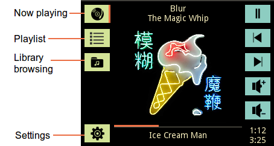
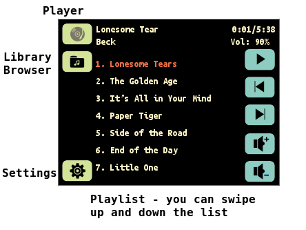
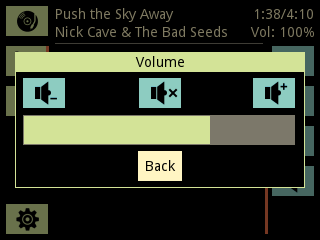
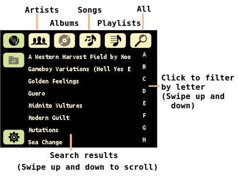
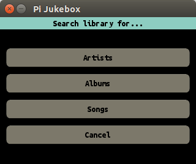
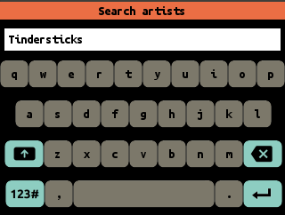
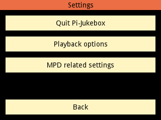
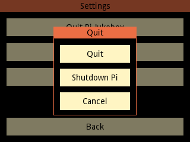
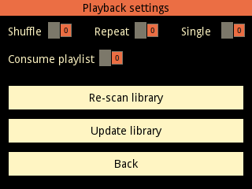

pi-jukebox
About pi-jukebox
Running pi-jukebox on your Raspberry Pi
Screenshots
The now playing screen
The playlist screen
The library screen
Selected artist Beck from the library
Searching an artist
Settings screen
Documentation pi-jukebox code
screen_player.py
: Playback screen.
screen_library.py
: MPD Library browsing screen
screen_settings.py
: Settings screen
mpd_client.py
: controlling and monitoring mpd via python-mpd2.
interface_widgets.py
: graphical widgets for the GUI
screen_keyboard.py
: On-screen keyboard
Preparing your Raspberry Pi
Hardware
Installing the operating system
Configuring the Raspberry Pi
Configuring the USB music device
Installing and configuring mpd
Setting up the music library
Zeroconf
Samba server
WiFi
pi-jukebox
Docs
»
Screenshots
View page source
Screenshots
¶
The now playing screen
¶

The playlist screen
¶
 
The library screen
¶

Selected artist Beck from the library
¶
Searching an artist
¶
 
Settings screen
¶
  